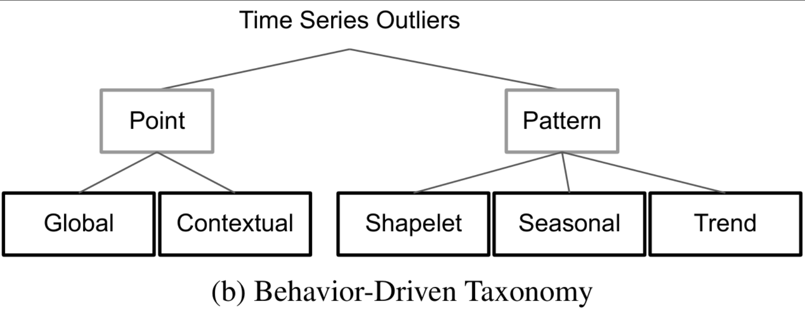
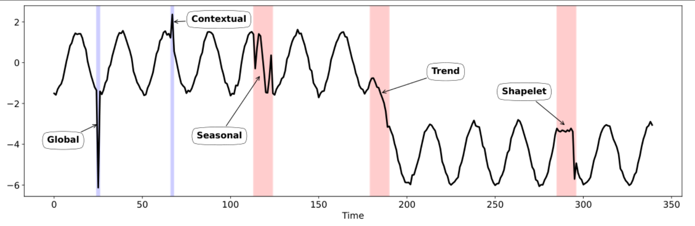
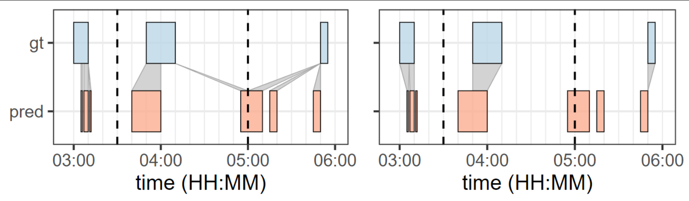
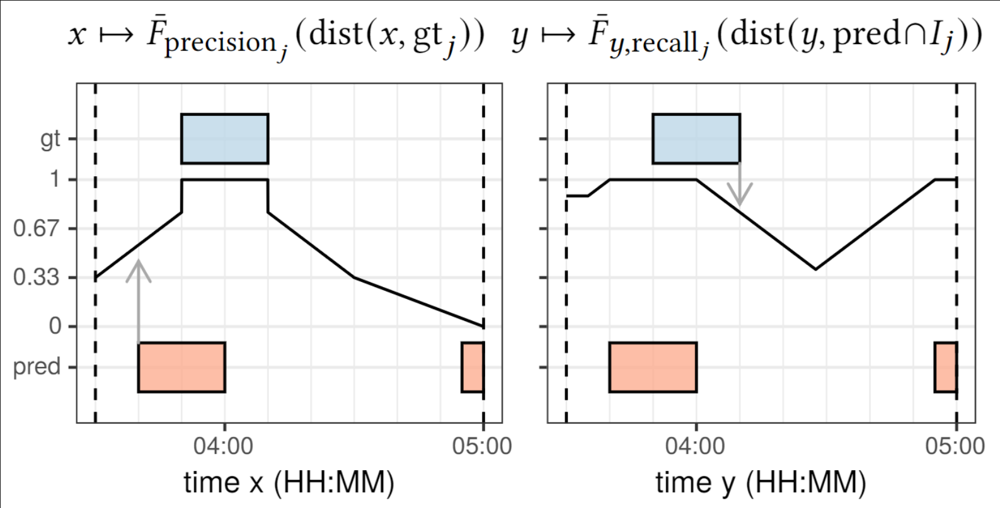
\[ P _{\text{precision} _j} = \frac{1}{| \text{pred} \cap I _j |} \int _{x\in \text{pred} \cap I _j} \bar{F} _{\text{precision} _j} (\text{dist} (x, \text{gt} _j)) \]
\[ \begin{aligned} P _{\text{precision}} & = \frac{1}{|S|} \sum _{j\in S} P _{\text{precision} _j} \\\\ P _{\text{recall}} & = \frac{1}{|S|} \sum _{j\in S} P _{\text{recall} _j} \end{aligned} \]
\[ \underbrace{\mathtt{\langle think \rangle \cdots \langle /think \rangle}} _ {\text{Reasoning}} \quad \underbrace{\mathtt{\langle class \rangle \cdots \langle /class \rangle}} _ {\text{Anomaly Type}} \quad \underbrace{\mathtt{\langle location \rangle \cdots \langle /location \rangle}} _ {\text{Anomaly Location}} \quad \]
think block expresses reasoning on anomaly detection.
class block expresses the type of anomaly.
location block expresses the location of anomalies.
\[ \begin{aligned} r(\hat y, y) = \ & w _\text{format} \cdot \text{format_score} (\hat y) \\ & + w _\text{class} \cdot \text{class_score} (\hat y, y) \\ & + w _\text{location} \cdot \text{location_score} (\hat y, y) \end{aligned} \]
\(\text{format_score}\) allows soft rewards (i.e., not a binary value).
\(\text{class_score} = \mathbb I \big(\text{class}(\hat y) = \text{class}(y)\big)\)
\(\text{location_score} = \text{Affiliation-F1}\big(\text{location}(\hat y), \text{location}(y)\big)\)
Can we enhance the reasoning more using “process reward” instead of “outcome reward”?
Given question \(q\) and \(G\) sampled outputs \(\{ o _1, \dots, o_G \}\).
Use process reward model to score each step of the outputs, yielding corresponding
rewards:
\[ \mathbf R=\{ \{r _1^{index(1)}, \dots, r _1^{index(K _1)}\}, \dots, \{r _G^{index(1)}, \dots, r _G^{index(K _G)}\} \}. \]
\(index(j)\) is the end token index of the \(j\)-th step.
\(K_i\) is the total number of steps in the \(i\)-th output.
Normalize these rewards with the average and the standard deviation:
\[ \tilde r _i^{index(j)} = \frac{r _i^{index(j)} - \text{mean}(\mathbf R)}{\text{std}(\mathbf R)}. \]
Process supervision calculates the advantage of each token as the sum of the
normalized rewards from the following steps:
\[ \hat A_{i,t}=\sum_{j:index(j)\ge t}\tilde r_i^{index(j)}. \]
Instead of using process reward model,
break down anomaly detection process manually,
and use verifiable reward on each step.
Coarse Classification
Select and output ONLY ONE most appropriate anomaly type from the coarse categories.
The type MUST be one of:
Normal, Point-wise, Pattern-wise.Fine-grained Classification
ONLY perform this step if the result of step 1 is Point-wise or Pattern-wise.
Output EXACTLY ONE sub-type based on the result of step 1.
The sub-type MUST be one of:
Global, Contextual, Shapelet, Seasonal, Trend.Localization
\[
\underbrace{\mathtt{\langle think1 \rangle \cdots \langle /think1 \rangle}} _ {\text{Reasoning}} \quad \underbrace{\mathtt{\langle class1 \rangle \cdots \langle /class1 \rangle}} _ {\text{Anomaly Type 1}} \\
\underbrace{\mathtt{\langle think2 \rangle \cdots \langle /think2 \rangle}} _ {\text{Reasoning}} \quad \underbrace{\mathtt{\langle class2 \rangle \cdots \langle /class2 \rangle}} _ {\text{Anomaly Type 2}} \\
\underbrace{\mathtt{\langle think3 \rangle \cdots \langle /think3 \rangle}} _ {\text{Reasoning}} \quad \underbrace{\mathtt{\langle location \rangle \cdots \langle /location \rangle}} _ {\text{Anomaly Location}}
\]
Skip think2 and class2 when class1 is Normal.
\[
\begin{aligned}
r ^{(1)} (\hat y, y) = & \ w _\text{format1} \cdot \text{format1_score} (\hat y) \\
& + w _{\text{class1}} \cdot \text{class1_score} (\hat y, y)
\end{aligned}
\]
\[ \begin{aligned} r ^{(2)} (\hat y, y) = & \ w _\text{format2} \cdot \text{format2_score} (\hat y) \\ & + w _{\text{class2}} \cdot \text{class2_score} (\hat y, y) \end{aligned} \]
\[\text{class2_score} = \mathbb I \big(\text{class2}(\hat y) = \text{class2}(y)\big) \times \mathbb I\big(\text{class2}(\hat y) \in \text{class1}(\hat y)\big)\]
\[ \begin{aligned} r ^{(3)} (\hat y, y) = & \ w _\text{format3} \cdot \text{format3_score} (\hat y) \\ & + w _{\text{location}} \cdot \text{location_score} (\hat y, y) \end{aligned} \]
Base Model
Dataset
Training using verl, the RL training library for LLMs.
Accept LoRA with rank 16 on all linear layers except visual layers.
Training until there is no performance improvements.
Outcome reward based model takes 20 epochs.
Process reward based model takes 15 epochs.
| class_acc | affi_prec | affi_recall | affi_f1 | |
|---|---|---|---|---|
| outcome_reward | 0.85856 | 0.827928 | 0.821378 | 0.81862 |
| process_reward | 0.85791 | 0.85857 | 0.86541 | 0.8554 |
| normal | seasonal | |||||||
|---|---|---|---|---|---|---|---|---|
| class_acc | affi_prec | affi_recall | affi_f1 | class_acc | affi_prec | affi_recall | affi_f1 | |
| outcome_reward | 0.84473 | 0.84473 | 0.84473 | 0.84473 | 0.9082 | 0.895071 | 0.932244 | 0.910779 |
| process_reward | 0.599609 | 0.599609 | 0.599609 | 0.599609 | 0.879883 | 0.90085 | 0.95972 | 0.92561 |
| trend | shapelet | |||||||
| class_acc | affi_prec | affi_recall | affi_f1 | class_acc | affi_prec | affi_recall | affi_f1 | |
| outcome_reward | 0.825195 | 0.805745 | 0.782903 | 0.781175 | 0.754883 | 0.896507 | 0.899268 | 0.895923 |
| process_reward | 0.96387 | 0.84975 | 0.91802 | 0.87269 | 0.92285 | 0.96083 | 0.97362 | 0.96609 |
| global | contextual | |||||||
| class_acc | affi_prec | affi_recall | affi_f1 | class_acc | affi_prec | affi_recall | affi_f1 | |
| outcome_reward | 1 | 0.77664 | 0.777708 | 0.775806 | 0.81836 | 0.748878 | 0.691421 | 0.703313 |
| process_reward | 0.998047 | 0.97677 | 0.96237 | 0.9669 | 0.783203 | 0.8636 | 0.7791 | 0.80148 |
| sine | triangle_wave | |||||||
|---|---|---|---|---|---|---|---|---|
| class_acc | affi_prec | affi_recall | affi_f1 | class | affi_prec | affi_recall | affi_f1 | |
| outcome_reward | 0.85026 | 0.793701 | 0.813495 | 0.797542 | 0.827474 | 0.77985 | 0.773077 | 0.770365 |
| process_reward | 0.846354 | 0.83913 | 0.85163 | 0.83911 | 0.85286 | 0.8292 | 0.84675 | 0.83132 |
| square_wave | sawtooth_wave | |||||||
| class_acc | affi_prec | affi_recall | affi_f1 | class_acc | affi_prec | affi_recall | affi_f1 | |
| outcome_reward | 0.89779 | 0.87727 | 0.869635 | 0.87003 | 0.858724 | 0.860895 | 0.829307 | 0.836545 |
| process_reward | 0.859375 | 0.858771 | 0.86367 | 0.855888 | 0.87305 | 0.90718 | 0.89958 | 0.89526 |
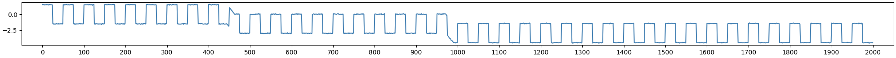
<think2> The pattern-wise anomaly is characterized by a change in the underlying trend (τ) of the series, which is evident in the sudden and sustained drop in the values. The series returns to its normal pattern after the anomaly, indicating a shift in the trend rather than a point-wise deviation.</think2>
<class2> Trend </class2>
<think3> The anomaly is detected in the middle of the series, where the values drop significantly and then return to the normal pattern. This suggests that the anomaly is located in the subsequences where the trend changes.</think3>
<location> [[430, 450], [940, 960]] </location>In real-world time series, multiple types of anomalies can occur simultaneously.
With the method we previously used, it seems difficult to effectively detect multiple types of anomalies.
Also, there are no metrics to evaluate class accuracy or the performance of class-aware anomaly detection performance when there are multiple types of anomalies.
So, when various kinds of anomalies appear, how can we strengthen the reasoning process?
<think>
...
</think>
<anomaly>
[
{"type": t_1,
"locations": [{"start": s_11, "end": e_11}, {"start": s_12, "end": e_12}, ...]},
{"type": t_2,
"locations": [{"start": s_21, "end": e_21}, {"start": s_22, "end": e_22}, ...]},
...
]
</anomaly>| affi_prec | affi_recall | affi_f1 | |
|---|---|---|---|
| base | 0.33634029 | 0.28213659 | 0.29783494 |
| outcome_reward | 0.70769185 | 0.72150965 | 0.7081522 |
| process_reward | 0.84455437 | 0.85952687 | 0.8435712 |
| affi_prec | affi_recall | affi_f1 | |
|---|---|---|---|
| base | 0.42039654 | 0.23908425 | 0.29160892 |
| outcome_reward | 0.7184274 | 0.5266675 | 0.59161479 |
| process_reward | 0.73050845 | 0.58263188 | 0.63214183 |
| affi_prec | affi_recall | affi_f1 | |
|---|---|---|---|
| base | 0.53396651 | 0.19754696 | 0.2774276 |
| outcome_reward | 0.66467482 | 0.35377235 | 0.44964107 |
| process_reward | 0.64661129 | 0.3750176 | 0.45770844 |
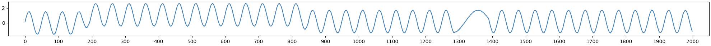
<think>
The provided time series chart shows a pattern of oscillations with a consistent frequency and amplitude. However, there are segments where the amplitude of the oscillations decreases significantly, indicating a change in the underlying trend. This suggests a trend anomaly where the series exhibits a shift in its underlying trend, but the basic shape and frequency remain normal.
The anomalies are located in the following intervals:
- The first anomaly is from the 85th to the 875th point, where the amplitude of the oscillations decreases.
- The second anomaly is from the 1200th to the 1340th point, where the amplitude of the oscillations decreases again.
This is a pattern-wise anomaly, specifically a Trend Anomaly, as the basic shape and frequency of the oscillations remain normal, but the trend changes.
</think>
<anomaly>
[{"type": "Trend", "locations": [{"start": 85, "end": 875}, {"start": 1200, "end": 1340}]}]
</anomaly>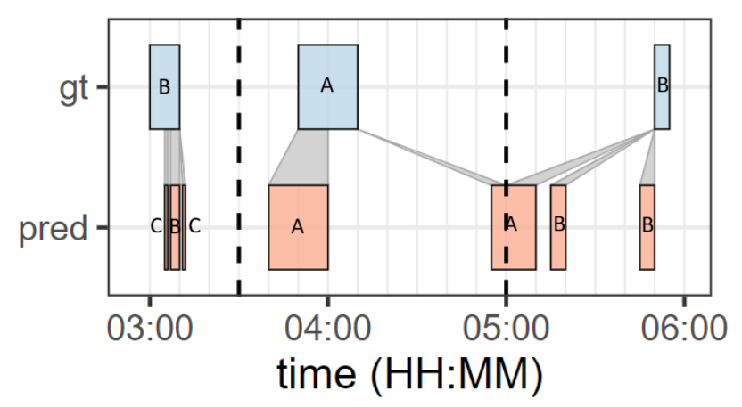
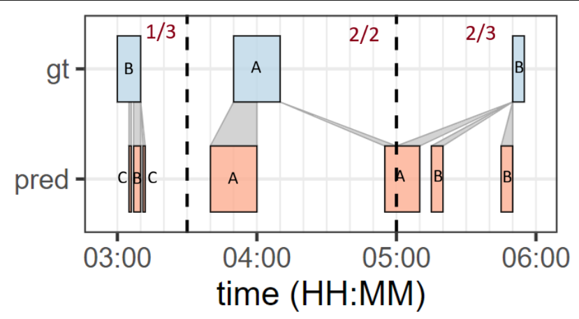
\[ \frac{\text{# of pred events that match class of gt event in the affiliation zone}}{\text{# of pred events in the affiliation zone}} \]
\[ \begin{aligned} & C _{\text{accuracy}} \\\\ & = \frac{1}{|S|} \sum _{j\in S} C _{\text{accuracy} _j} \\\\ & = \frac{1}{3} \left( \frac{1}{3} + \frac{2}{2} + \frac{2}{3} \right) \\\\ & = \frac{2}{3} \end{aligned} \]
Just adapt affiliation metrics to class-aware affiliation metrics as below:
\[ \begin{aligned} CP _{\text{precision} _j} \triangleq \frac{1}{|\text{pred} \cap I _j|} \int _{x\in \text{pred}\cap I _j} & \big( w\cdot \mathbb I (\text{type_of_}x = \text{type_of_}\mathrm{gt} _j) + (1-w) \big) \\\\ & \ \times \bar{F} _{\text{precision} _j} \left(\text{dist}(x, \text{gt} _j) \right)dx. \end{aligned} \]
\(w\) controls the impact of class in the metric.
If \(w=0\), then it is just affiliation precision
We can adapt affiliation recall to class-aware affiliation recall similarly.
\[ \begin{aligned} r(\hat y, y) = & \ w _\text{format} \cdot \text{format_score} (\hat y) \\ & + w _\text{class} \cdot \text{class_score} (\hat y, y) \\ & + w _\text{location} \cdot \text{location_score} (\hat y, y) \end{aligned} \]
\(\text{format_score}\) allows soft rewards (i.e., not a binary value).
\(\text{class_score} = C _{\text{accuracy}}\big(\text{class}(\hat y), \text{class}(y)\big)\)
\(\text{location_score} = \text{Affiliation-F1}\big(\text{location}(\hat y), \text{location}(y)\big)\)
\[ \begin{aligned} r(\hat y, y) = & \ w _\text{format} \cdot \text{format_score} (\hat y) \\\\ & + w _\text{ca_location} \cdot \text{ca_location_score} (\hat y, y) \end{aligned} \]
\(\text{format_score}\) allows soft rewards (i.e., not a binary value).
\(\text{ca_location_score} = CP _{\text{precision}}\big( \text{class_location}(\hat y), \text{class_location}(y) \big)\)
Base Model
Dataset
Synthetic dataset containing single, double, and triple types of anomalies.
To get the experiment results faster, we only used data based on sine time series.
Training using verl, the RL training library for LLMs.
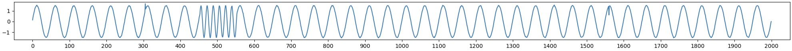
seasonal_contextual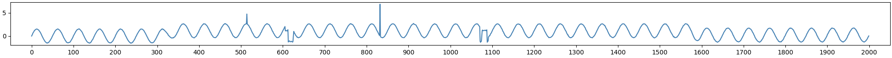
trend_shapelet_global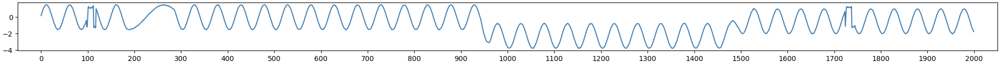
seaosnal_trend_shapelet| class | affi_prec | affi_recall | affi_f1 | |
|---|---|---|---|---|
| base | 0.15003352 | 0.49386263 | 0.2581274 | 0.31853885 |
| outcome_reward | 0.37740859 | 0.69169991 | 0.48758831 | 0.55140646 |
| process_reward | 0.4199203 | 0.7234432 | 0.541295 | 0.5969736 |
| mutliclass_outcome_reward | 0.78989983 | 0.91387313 | 0.84172369 | 0.86790302 |
| no anomaly | single | |||||||
|---|---|---|---|---|---|---|---|---|
| class_acc | affi_prec | affi_recall | affi_f1 | class_acc | affi_prec | affi_recall | affi_f1 | |
| base | 0.8799049 | 0.8799049 | 0.8799049 | 0.8799049 | 0.13978907 | 0.33634029 | 0.28213659 | 0.29783494 |
| outcome_reward | 0.63611221 | 0.63611221 | 0.63611221 | 0.63611221 | 0.6798839 | 0.70769185 | 0.72150965 | 0.7081522 |
| process_reward | 0.63141279 | 0.63141279 | 0.63141279 | 0.63141279 | 0.7976915 | 0.8445544 | 0.8595269 | 0.8435712 |
| mutliclass_outcome_reward | 0.9609375 | 0.9609375 | 0.9609375 | 0.9609375 | 0.89370012 | 0.91456975 | 0.93545033 | 0.91885502 |
| double | triple | |||||||
| class_acc | affi_prec | affi_recall | affi_f1 | class_acc | affi_prec | affi_recall | affi_f1 | |
| base | 0.09536151 | 0.42039654 | 0.23908425 | 0.29160892 | 0.10968438 | 0.53396651 | 0.19754696 | 0.2774276 |
| outcome_reward | 0.35262472 | 0.7184274 | 0.5266675 | 0.59161479 | 0.23276485 | 0.6646748 | 0.35377235 | 0.44964107 |
| process_reward | 0.3975393 | 0.7305085 | 0.5826319 | 0.6321418 | 0.2446475 | 0.64661129 | 0.3750176 | 0.4577084 |
| mutliclass_outcome_reward | 0.86189234 | 0.93144028 | 0.90109951 | 0.91024242 | 0.70324317 | 0.89823595 | 0.76882101 | 0.82072479 |
| class_acc | affi_prec | affi_recall | affi_f1 | |
|---|---|---|---|---|
| seasonal | 0.893215 | 0.91856 | 0.93923 | 0.928207 |
| trend | 0.85466 | 0.85484 | 0.895359 | 0.865473 |
| shapelet | 0.93784 | 0.976445 | 0.985496 | 0.979781 |
| global | 0.89812 | 0.908477 | 0.96642 | 0.92898 |
| contextual | 0.878254 | 0.908063 | 0.883902 | 0.885246 |
LLMs are good at detecting shaeplet and global anomalies.
LLMs are not goot at detecting trend and contextual anomalies.
| double anomalies | triple anomalies | |||||||
|---|---|---|---|---|---|---|---|---|
| class_acc | affi_prec | affi_recall | affi_f1 | class_acc | affi_prec | affi_recall | affi_f1 | |
| seasonal_contained | 0.877631 | 0.93439 | 0.913463 | 0.918296 | 0.733518 | 0.893675 | 0.796038 | 0.83522 |
| trend_contained | 0.746717 | 0.895155 | 0.809342 | 0.838939 | 0.664177 | 0.877987 | 0.737089 | 0.792569 |
| shapelet_contained | 0.85504 | 0.94023 | 0.90118 | 0.91584 | 0.72897 | 0.903229 | 0.79199 | 0.837845 |
| global_contained | 0.78567 | 0.919494 | 0.831072 | 0.863258 | 0.689337 | 0.895391 | 0.746046 | 0.805428 |
| contextual_contained | 0.765528 | 0.924652 | 0.816537 | 0.857294 | 0.681727 | 0.8972 | 0.752732 | 0.810951 |
Different from the previous results, LLMs are not good at detecting anomalies when
the data contains global anomaly and the other type of anomalies.
The reason may be when global anomaly combined with other anomalies, the LLMs
concentrate on detecting global ones, and disregard contextual ones.
| class_acc | affi_prec | affi_recall | affi_f1 | |
|---|---|---|---|---|
| seasonal_trend | 0.842984 | 0.894164 | 0.897062 | 0.888484 |
| seasonal_shaplet | 0.931227 | 0.965168 | 0.964355 | 0.963332 |
| seasonal_global | 0.89705 | 0.930316 | 0.93358 | 0.930434 |
| seasonal_contextual | 0.839266 | 0.947918 | 0.858852 | 0.890934 |
| trend_shapelet | 0.792316 | 0.912551 | 0.844719 | 0.871055 |
| trend_global | 0.656574 | 0.892055 | 0.705598 | 0.773574 |
| trend_contextual | 0.694992 | 0.881852 | 0.789988 | 0.822645 |
| shapelet_global | 0.87891 | 0.934984 | 0.931727 | 0.9312 |
| shapelet_contextual | 0.817707 | 0.94822 | 0.863926 | 0.897777 |
| global_contextual | 0.710148 | 0.920621 | 0.753383 | 0.81782 |
| class_acc | affi_prec | affi_recall | affi_f1 | |
|---|---|---|---|---|
| seasonal_trend_shapelet | 0.76289 | 0.887395 | 0.82719 | 0.850844 |
| seasonal_trend_global | 0.642578 | 0.862484 | 0.699313 | 0.762664 |
| seasonal_trend_contextual | 0.690887 | 0.87073 | 0.778551 | 0.815152 |
| seasonal_shapelet_global | 0.829363 | 0.906871 | 0.890117 | 0.895938 |
| seasonal_shapelet_contextual | 0.75625 | 0.92268 | 0.810969 | 0.85857 |
| seasonal_global_contextual | 0.719137 | 0.91189 | 0.770086 | 0.828152 |
| trend_shapelet_global | 0.670262 | 0.895031 | 0.714781 | 0.788875 |
| trend_shapelet_contextual | 0.649406 | 0.881805 | 0.754809 | 0.806891 |
| trend_global_contextual | 0.569039 | 0.870477 | 0.647887 | 0.730988 |
| shapelet_global_contextual | 0.705645 | 0.92559 | 0.75409 | 0.825949 |
| single anomaly | ||||
|---|---|---|---|---|
| class_acc | affi_prec | affi_recall | affi_f1 | |
| pattern | 0.895238 | 0.916615 | 0.940029 | 0.924487 |
| point | 0.888186 | 0.90827 | 0.92516 | 0.907111 |
| double anomalies | ||||
| double anomaly | class_acc | affi_prec | affi_recall | affi_f1 |
| pattern_only | 0.855509 | 0.923961 | 0.902046 | 0.907624 |
| point_only | 0.710148 | 0.920621 | 0.753383 | 0.81782 |
| pattern_point_combined | 0.797416 | 0.922557 | 0.847279 | 0.874428 |
| triple anomalies | ||||
| triple anomaly | class_acc | affi_prec | affi_recall | affi_f1 |
| pattern_only | 0.762891 | 0.887395 | 0.827191 | 0.850844 |
| pattern_point_combined | 0.692507 | 0.894173 | 0.757845 | 0.812576 |
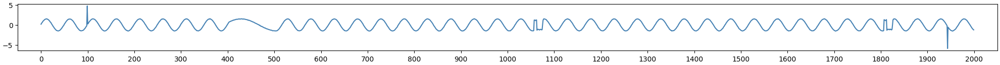
<think>
The provided time series shows a series of oscillations with a periodic pattern. There are a few points where the pattern deviates from the norm:
1. At around 97, there is a sharp spike that deviates significantly from the rest of the series, indicating a Global Anomaly.
2. Between 420 and 500, there is a noticeable change in the frequency of the oscillations, suggesting a Seasonal Anomaly.
3. Between 1060 and 1076, there is a short, sharp, and irregular segment, indicating a Shapelet Anomaly.
4. Between 1820 and 1830, there is another short, sharp, and irregular segment, indicating a Shapelet Anomaly.
5. At around 1940, there is a sharp spike that deviates significantly from the rest of the series, indicating a Global Anomaly.
</think>
<anomaly>
[
{"type": "Global", "locations": [{"start": 97, "end": 97}, {"start": 1940, "end": 1940}]},
{"type": "Seasonal", "locations": [{"start": 420, "end": 500}]},
{"type": "Shapelet", "locations": [{"start": 1060, "end": 1076}, {"start": 1820, "end": 1830}]}
]
</anomaly>